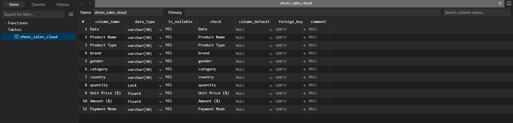

EXPLORATION DATA#
POWER BI#
Tipe Data Dataset#
Pertama tama kita akan mengentahui terlebih dahulu, kira kira apa tipe data dari setiap kolom yang ada pada dataset yang sudah kita kumpulkan. berikut ini adalah tipe datanya


Quality Check Data#
Pada power BI kita bisa melihat kualitas dari suatu data. Caranya adalah dengan mengklik tab Transformasi Data. Selanjutnya berikut ini adalah point point yang penulis akan cek.
Outliers Detection
Berikut ini adalah proses pengecekan outliers dengan menggunakan Power BI, dimana saya juga menjalankan script python untuk menampilkan scatter plotnya

Konsistensi Data
Data bagus, jadi tidak ada data unik pada kolom yang memang datanya adalah klasifikasi. Berikut ini adalah salah satu contoh gambar yang penulis berikan untuk mengecek konsistensi data. Dimana data gender tidak memiliki data unik dan tetap menggunakan 3 data saja antara Men, Women, Unisex

Missing Value
Pada dataset yang saya cari dan gunakah tidak ditemukan adanya missing value, bisa terlihat pada gambar yang ada dibawah ini bahwa nilai dari missing valuenya adalah nol. Jadi dataset yang saya gunakan cukup bagus.

Python#
Koneksi dengan PostgresSQL#
import os
import pandas as pd
from dotenv import load_dotenv
from sqlalchemy import create_engine
load_dotenv()
# Ambil variabel dari .env
db_user = os.getenv("USER_POSTGRES")
db_password = os.getenv("PASS_POSTGRES")
db_host = os.getenv("HOST_POSTGRES")
db_port = os.getenv("PORT_POSTGRES")
db_name = os.getenv("DB_POSTGRES")
connection_string = f"postgresql+psycopg2://{db_user}:{db_password}@{db_host}:{db_port}/{db_name}"
postgres_engine = create_engine(connection_string)
pg_query = 'SELECT * FROM shoes_sales_cloud'
pg_df = pd.read_sql(pg_query, postgres_engine)
---------------------------------------------------------------------------
OperationalError Traceback (most recent call last)
File D:\Perkuliahan\Semester 5\Poyek Sains Data\PSD-2\venv_py3.11\Lib\site-packages\sqlalchemy\engine\base.py:143, in Connection.__init__(self, engine, connection, _has_events, _allow_revalidate, _allow_autobegin)
142 try:
--> 143 self._dbapi_connection = engine.raw_connection()
144 except dialect.loaded_dbapi.Error as err:
File D:\Perkuliahan\Semester 5\Poyek Sains Data\PSD-2\venv_py3.11\Lib\site-packages\sqlalchemy\engine\base.py:3301, in Engine.raw_connection(self)
3280 """Return a "raw" DBAPI connection from the connection pool.
3281
3282 The returned object is a proxied version of the DBAPI
(...) 3299
3300 """
-> 3301 return self.pool.connect()
File D:\Perkuliahan\Semester 5\Poyek Sains Data\PSD-2\venv_py3.11\Lib\site-packages\sqlalchemy\pool\base.py:447, in Pool.connect(self)
440 """Return a DBAPI connection from the pool.
441
442 The connection is instrumented such that when its
(...) 445
446 """
--> 447 return _ConnectionFairy._checkout(self)
File D:\Perkuliahan\Semester 5\Poyek Sains Data\PSD-2\venv_py3.11\Lib\site-packages\sqlalchemy\pool\base.py:1264, in _ConnectionFairy._checkout(cls, pool, threadconns, fairy)
1263 if not fairy:
-> 1264 fairy = _ConnectionRecord.checkout(pool)
1266 if threadconns is not None:
File D:\Perkuliahan\Semester 5\Poyek Sains Data\PSD-2\venv_py3.11\Lib\site-packages\sqlalchemy\pool\base.py:711, in _ConnectionRecord.checkout(cls, pool)
710 else:
--> 711 rec = pool._do_get()
713 try:
File D:\Perkuliahan\Semester 5\Poyek Sains Data\PSD-2\venv_py3.11\Lib\site-packages\sqlalchemy\pool\impl.py:177, in QueuePool._do_get(self)
176 except:
--> 177 with util.safe_reraise():
178 self._dec_overflow()
File D:\Perkuliahan\Semester 5\Poyek Sains Data\PSD-2\venv_py3.11\Lib\site-packages\sqlalchemy\util\langhelpers.py:224, in safe_reraise.__exit__(self, type_, value, traceback)
223 self._exc_info = None # remove potential circular references
--> 224 raise exc_value.with_traceback(exc_tb)
225 else:
File D:\Perkuliahan\Semester 5\Poyek Sains Data\PSD-2\venv_py3.11\Lib\site-packages\sqlalchemy\pool\impl.py:175, in QueuePool._do_get(self)
174 try:
--> 175 return self._create_connection()
176 except:
File D:\Perkuliahan\Semester 5\Poyek Sains Data\PSD-2\venv_py3.11\Lib\site-packages\sqlalchemy\pool\base.py:388, in Pool._create_connection(self)
386 """Called by subclasses to create a new ConnectionRecord."""
--> 388 return _ConnectionRecord(self)
File D:\Perkuliahan\Semester 5\Poyek Sains Data\PSD-2\venv_py3.11\Lib\site-packages\sqlalchemy\pool\base.py:673, in _ConnectionRecord.__init__(self, pool, connect)
672 if connect:
--> 673 self.__connect()
674 self.finalize_callback = deque()
File D:\Perkuliahan\Semester 5\Poyek Sains Data\PSD-2\venv_py3.11\Lib\site-packages\sqlalchemy\pool\base.py:899, in _ConnectionRecord.__connect(self)
898 except BaseException as e:
--> 899 with util.safe_reraise():
900 pool.logger.debug("Error on connect(): %s", e)
File D:\Perkuliahan\Semester 5\Poyek Sains Data\PSD-2\venv_py3.11\Lib\site-packages\sqlalchemy\util\langhelpers.py:224, in safe_reraise.__exit__(self, type_, value, traceback)
223 self._exc_info = None # remove potential circular references
--> 224 raise exc_value.with_traceback(exc_tb)
225 else:
File D:\Perkuliahan\Semester 5\Poyek Sains Data\PSD-2\venv_py3.11\Lib\site-packages\sqlalchemy\pool\base.py:895, in _ConnectionRecord.__connect(self)
894 self.starttime = time.time()
--> 895 self.dbapi_connection = connection = pool._invoke_creator(self)
896 pool.logger.debug("Created new connection %r", connection)
File D:\Perkuliahan\Semester 5\Poyek Sains Data\PSD-2\venv_py3.11\Lib\site-packages\sqlalchemy\engine\create.py:661, in create_engine.<locals>.connect(connection_record)
659 return connection
--> 661 return dialect.connect(*cargs, **cparams)
File D:\Perkuliahan\Semester 5\Poyek Sains Data\PSD-2\venv_py3.11\Lib\site-packages\sqlalchemy\engine\default.py:629, in DefaultDialect.connect(self, *cargs, **cparams)
627 def connect(self, *cargs: Any, **cparams: Any) -> DBAPIConnection:
628 # inherits the docstring from interfaces.Dialect.connect
--> 629 return self.loaded_dbapi.connect(*cargs, **cparams)
File D:\Perkuliahan\Semester 5\Poyek Sains Data\PSD-2\venv_py3.11\Lib\site-packages\psycopg2\__init__.py:122, in connect(dsn, connection_factory, cursor_factory, **kwargs)
121 dsn = _ext.make_dsn(dsn, **kwargs)
--> 122 conn = _connect(dsn, connection_factory=connection_factory, **kwasync)
123 if cursor_factory is not None:
OperationalError: could not translate host name "pg-3266d3cf-postgresqlpendata-11.h.aivencloud.com" to address: No such host is known.
The above exception was the direct cause of the following exception:
OperationalError Traceback (most recent call last)
Cell In[3], line 2
1 pg_query = 'SELECT * FROM shoes_sales_cloud'
----> 2 pg_df = pd.read_sql(pg_query, postgres_engine)
File D:\Perkuliahan\Semester 5\Poyek Sains Data\PSD-2\venv_py3.11\Lib\site-packages\pandas\io\sql.py:652, in read_sql(sql, con, index_col, coerce_float, params, parse_dates, columns, chunksize, dtype_backend, dtype)
649 dtype_backend = "numpy" # type: ignore[assignment]
650 assert dtype_backend is not lib.no_default
--> 652 with pandasSQL_builder(con) as pandas_sql:
653 if isinstance(pandas_sql, SQLiteDatabase):
654 return pandas_sql.read_query(
655 sql,
656 index_col=index_col,
(...) 662 dtype=dtype,
663 )
File D:\Perkuliahan\Semester 5\Poyek Sains Data\PSD-2\venv_py3.11\Lib\site-packages\pandas\io\sql.py:851, in pandasSQL_builder(con, schema, need_transaction)
848 raise ImportError("Using URI string without sqlalchemy installed.")
850 if sqlalchemy is not None and isinstance(con, (str, sqlalchemy.engine.Connectable)):
--> 851 return SQLDatabase(con, schema, need_transaction)
853 warnings.warn(
854 "pandas only supports SQLAlchemy connectable (engine/connection) or "
855 "database string URI or sqlite3 DBAPI2 connection. Other DBAPI2 "
(...) 858 stacklevel=find_stack_level(),
859 )
860 return SQLiteDatabase(con)
File D:\Perkuliahan\Semester 5\Poyek Sains Data\PSD-2\venv_py3.11\Lib\site-packages\pandas\io\sql.py:1576, in SQLDatabase.__init__(self, con, schema, need_transaction)
1574 self.exit_stack.callback(con.dispose)
1575 if isinstance(con, Engine):
-> 1576 con = self.exit_stack.enter_context(con.connect())
1577 if need_transaction and not con.in_transaction():
1578 self.exit_stack.enter_context(con.begin())
File D:\Perkuliahan\Semester 5\Poyek Sains Data\PSD-2\venv_py3.11\Lib\site-packages\sqlalchemy\engine\base.py:3277, in Engine.connect(self)
3254 def connect(self) -> Connection:
3255 """Return a new :class:`_engine.Connection` object.
3256
3257 The :class:`_engine.Connection` acts as a Python context manager, so
(...) 3274
3275 """
-> 3277 return self._connection_cls(self)
File D:\Perkuliahan\Semester 5\Poyek Sains Data\PSD-2\venv_py3.11\Lib\site-packages\sqlalchemy\engine\base.py:145, in Connection.__init__(self, engine, connection, _has_events, _allow_revalidate, _allow_autobegin)
143 self._dbapi_connection = engine.raw_connection()
144 except dialect.loaded_dbapi.Error as err:
--> 145 Connection._handle_dbapi_exception_noconnection(
146 err, dialect, engine
147 )
148 raise
149 else:
File D:\Perkuliahan\Semester 5\Poyek Sains Data\PSD-2\venv_py3.11\Lib\site-packages\sqlalchemy\engine\base.py:2440, in Connection._handle_dbapi_exception_noconnection(cls, e, dialect, engine, is_disconnect, invalidate_pool_on_disconnect, is_pre_ping)
2438 elif should_wrap:
2439 assert sqlalchemy_exception is not None
-> 2440 raise sqlalchemy_exception.with_traceback(exc_info[2]) from e
2441 else:
2442 assert exc_info[1] is not None
File D:\Perkuliahan\Semester 5\Poyek Sains Data\PSD-2\venv_py3.11\Lib\site-packages\sqlalchemy\engine\base.py:143, in Connection.__init__(self, engine, connection, _has_events, _allow_revalidate, _allow_autobegin)
141 if connection is None:
142 try:
--> 143 self._dbapi_connection = engine.raw_connection()
144 except dialect.loaded_dbapi.Error as err:
145 Connection._handle_dbapi_exception_noconnection(
146 err, dialect, engine
147 )
File D:\Perkuliahan\Semester 5\Poyek Sains Data\PSD-2\venv_py3.11\Lib\site-packages\sqlalchemy\engine\base.py:3301, in Engine.raw_connection(self)
3279 def raw_connection(self) -> PoolProxiedConnection:
3280 """Return a "raw" DBAPI connection from the connection pool.
3281
3282 The returned object is a proxied version of the DBAPI
(...) 3299
3300 """
-> 3301 return self.pool.connect()
File D:\Perkuliahan\Semester 5\Poyek Sains Data\PSD-2\venv_py3.11\Lib\site-packages\sqlalchemy\pool\base.py:447, in Pool.connect(self)
439 def connect(self) -> PoolProxiedConnection:
440 """Return a DBAPI connection from the pool.
441
442 The connection is instrumented such that when its
(...) 445
446 """
--> 447 return _ConnectionFairy._checkout(self)
File D:\Perkuliahan\Semester 5\Poyek Sains Data\PSD-2\venv_py3.11\Lib\site-packages\sqlalchemy\pool\base.py:1264, in _ConnectionFairy._checkout(cls, pool, threadconns, fairy)
1256 @classmethod
1257 def _checkout(
1258 cls,
(...) 1261 fairy: Optional[_ConnectionFairy] = None,
1262 ) -> _ConnectionFairy:
1263 if not fairy:
-> 1264 fairy = _ConnectionRecord.checkout(pool)
1266 if threadconns is not None:
1267 threadconns.current = weakref.ref(fairy)
File D:\Perkuliahan\Semester 5\Poyek Sains Data\PSD-2\venv_py3.11\Lib\site-packages\sqlalchemy\pool\base.py:711, in _ConnectionRecord.checkout(cls, pool)
709 rec = cast(_ConnectionRecord, pool._do_get())
710 else:
--> 711 rec = pool._do_get()
713 try:
714 dbapi_connection = rec.get_connection()
File D:\Perkuliahan\Semester 5\Poyek Sains Data\PSD-2\venv_py3.11\Lib\site-packages\sqlalchemy\pool\impl.py:177, in QueuePool._do_get(self)
175 return self._create_connection()
176 except:
--> 177 with util.safe_reraise():
178 self._dec_overflow()
179 raise
File D:\Perkuliahan\Semester 5\Poyek Sains Data\PSD-2\venv_py3.11\Lib\site-packages\sqlalchemy\util\langhelpers.py:224, in safe_reraise.__exit__(self, type_, value, traceback)
222 assert exc_value is not None
223 self._exc_info = None # remove potential circular references
--> 224 raise exc_value.with_traceback(exc_tb)
225 else:
226 self._exc_info = None # remove potential circular references
File D:\Perkuliahan\Semester 5\Poyek Sains Data\PSD-2\venv_py3.11\Lib\site-packages\sqlalchemy\pool\impl.py:175, in QueuePool._do_get(self)
173 if self._inc_overflow():
174 try:
--> 175 return self._create_connection()
176 except:
177 with util.safe_reraise():
File D:\Perkuliahan\Semester 5\Poyek Sains Data\PSD-2\venv_py3.11\Lib\site-packages\sqlalchemy\pool\base.py:388, in Pool._create_connection(self)
385 def _create_connection(self) -> ConnectionPoolEntry:
386 """Called by subclasses to create a new ConnectionRecord."""
--> 388 return _ConnectionRecord(self)
File D:\Perkuliahan\Semester 5\Poyek Sains Data\PSD-2\venv_py3.11\Lib\site-packages\sqlalchemy\pool\base.py:673, in _ConnectionRecord.__init__(self, pool, connect)
671 self.__pool = pool
672 if connect:
--> 673 self.__connect()
674 self.finalize_callback = deque()
File D:\Perkuliahan\Semester 5\Poyek Sains Data\PSD-2\venv_py3.11\Lib\site-packages\sqlalchemy\pool\base.py:899, in _ConnectionRecord.__connect(self)
897 self.fresh = True
898 except BaseException as e:
--> 899 with util.safe_reraise():
900 pool.logger.debug("Error on connect(): %s", e)
901 else:
902 # in SQLAlchemy 1.4 the first_connect event is not used by
903 # the engine, so this will usually not be set
File D:\Perkuliahan\Semester 5\Poyek Sains Data\PSD-2\venv_py3.11\Lib\site-packages\sqlalchemy\util\langhelpers.py:224, in safe_reraise.__exit__(self, type_, value, traceback)
222 assert exc_value is not None
223 self._exc_info = None # remove potential circular references
--> 224 raise exc_value.with_traceback(exc_tb)
225 else:
226 self._exc_info = None # remove potential circular references
File D:\Perkuliahan\Semester 5\Poyek Sains Data\PSD-2\venv_py3.11\Lib\site-packages\sqlalchemy\pool\base.py:895, in _ConnectionRecord.__connect(self)
893 try:
894 self.starttime = time.time()
--> 895 self.dbapi_connection = connection = pool._invoke_creator(self)
896 pool.logger.debug("Created new connection %r", connection)
897 self.fresh = True
File D:\Perkuliahan\Semester 5\Poyek Sains Data\PSD-2\venv_py3.11\Lib\site-packages\sqlalchemy\engine\create.py:661, in create_engine.<locals>.connect(connection_record)
658 if connection is not None:
659 return connection
--> 661 return dialect.connect(*cargs, **cparams)
File D:\Perkuliahan\Semester 5\Poyek Sains Data\PSD-2\venv_py3.11\Lib\site-packages\sqlalchemy\engine\default.py:629, in DefaultDialect.connect(self, *cargs, **cparams)
627 def connect(self, *cargs: Any, **cparams: Any) -> DBAPIConnection:
628 # inherits the docstring from interfaces.Dialect.connect
--> 629 return self.loaded_dbapi.connect(*cargs, **cparams)
File D:\Perkuliahan\Semester 5\Poyek Sains Data\PSD-2\venv_py3.11\Lib\site-packages\psycopg2\__init__.py:122, in connect(dsn, connection_factory, cursor_factory, **kwargs)
119 kwasync['async_'] = kwargs.pop('async_')
121 dsn = _ext.make_dsn(dsn, **kwargs)
--> 122 conn = _connect(dsn, connection_factory=connection_factory, **kwasync)
123 if cursor_factory is not None:
124 conn.cursor_factory = cursor_factory
OperationalError: (psycopg2.OperationalError) could not translate host name "pg-3266d3cf-postgresqlpendata-11.h.aivencloud.com" to address: No such host is known.
(Background on this error at: https://sqlalche.me/e/20/e3q8)
print("Berikut ini adalah dataset yang akan saya gunakan dalam tugas ini: ")
print(pg_df)
Berikut ini adalah dataset yang akan saya gunakan dalam tugas ini:
Date Product Name Product Type brand gender \
0 2022-05-27 Fear of God Essentials Tee T-shirt Essentials Unisex
1 2022-08-22 Yeezy Boost 350 Sneakers Adidas Unisex
2 2022-04-03 Nike Dunk Low Sneakers Nike Women
3 2022-07-13 Nike Tech Fleece Hoodie Nike Men
4 2022-08-25 Jordan 1 High Sneakers Nike Women
.. ... ... ... ... ...
348 2022-04-08 Jordan 1 High Sneakers Nike Men
349 2022-08-03 Nike Tech Fleece Hoodie Nike Women
350 2022-05-05 Puma Joggers Joggers Puma Women
351 2022-05-19 Adidas Ultraboost Sneakers Adidas Men
352 2022-07-17 Nike Dunk Low Sneakers Nike Women
category country quantity Unit Price ($) Amount ($) \
0 Limited Edition Japan 5 141.82 709.10
1 Streetwear USA 2 267.34 534.68
2 Limited Edition Germany 1 292.00 292.00
3 Limited Edition USA 4 245.44 981.76
4 Casual Australia 2 184.51 369.02
.. ... ... ... ... ...
348 Casual India 5 94.25 471.25
349 Casual Germany 5 259.00 1295.00
350 Casual Germany 4 299.73 1198.92
351 Casual Canada 5 71.26 356.30
352 Limited Edition Japan 5 270.14 1350.70
Payment Mode
0 Card
1 Cash on Delivery
2 Cash on Delivery
3 Cash on Delivery
4 Cash on Delivery
.. ...
348 Wallet
349 Card
350 Cash on Delivery
351 Cash on Delivery
352 Wallet
[353 rows x 11 columns]
df = pg_df.copy()
Tipe Data Dataset#
print(type(df['Date'][0]))
print(type(df['Product Name'][0]))
print(type(df['Product Type'][0]))
print(type(df['brand'][0]))
print(type(df['gender'][0]))
print(type(df['country'][0]))
print(type(df['Unit Price ($)'][0]))
print(type(df['Amount ($)'][0]))
print(type(df['Payment Mode'][0]))
<class 'str'>
<class 'str'>
<class 'str'>
<class 'str'>
<class 'str'>
<class 'str'>
<class 'numpy.float64'>
<class 'numpy.float64'>
<class 'str'>
Eksplorasi Data#
Outliers Detection#
import pandas as pd
import matplotlib.pyplot as plt
import seaborn as sns
# hitung IQR
Q1 = df['Unit Price ($)'].quantile(0.25)
Q3 = df['Unit Price ($)'].quantile(0.75)
IQR = Q3 - Q1
lower_bound = Q1 - 1.5 * IQR
upper_bound = Q3 + 1.5 * IQR
# buat kolom outlier
df['Outlier'] = ((df['Unit Price ($)'] < lower_bound) |
(df['Unit Price ($)'] > upper_bound))
# visualisasi boxplot
plt.figure(figsize=(10,6))
sns.boxplot(data=df, x='brand', y='Unit Price ($)', hue='Outlier',
palette={False:"skyblue", True:"red"})
plt.title("Deteksi Outlier Harga per Brand")
plt.xticks(rotation=45)
plt.show()
Konsistensi Data#
# ============================
# Cek format tanggal valid
# ============================
df["valid_date"] = pd.to_datetime(df["Date"], errors="coerce")
invalid_dates = df[df["valid_date"].isna()]
# ============================
# Cek konsistensi kolom Gender
# ============================
valid_genders = ["Men", "Women", "Unisex"]
invalid_genders = df[~df["gender"].isin(valid_genders)]
# ============================
# Cek nilai Quantity
# ============================
invalid_quantity = df[df["quantity"] <= 0]
# ============================
# Cek konsistensi Amount = Quantity * Unit Price
# ============================
df["calc_amount"] = df["quantity"] * df["Unit Price ($)"]
invalid_amount = df[df["calc_amount"].round(2) != df["Amount ($)"].round(2)]
# ============================
# Cek Payment Mode
# ============================
valid_payment = ["Card", "Cash on Delivery", "UPI", "Net Banking", "Wallet"]
invalid_payment = df[~df["Payment Mode"].isin(valid_payment)]
# ============================
# Cek duplikasi data
# ============================
duplicates = df[df.duplicated(keep=False)]
print("=== Data dengan format tanggal tidak valid ===")
print(invalid_dates)
print("\n=== Data dengan gender tidak valid ===")
print(invalid_genders)
print("\n=== Data dengan quantity tidak valid ===")
print(invalid_quantity)
print("\n=== Data dengan amount tidak konsisten ===")
print(invalid_amount)
print("\n=== Data dengan payment mode tidak valid ===")
print(invalid_payment)
print("\n=== Data duplikat ===")
print(duplicates)
=== Data dengan format tanggal tidak valid ===
Empty DataFrame
Columns: [Date, Product Name, Product Type, brand, gender, category, country, quantity, Unit Price ($), Amount ($), Payment Mode, Outlier, valid_date]
Index: []
=== Data dengan gender tidak valid ===
Empty DataFrame
Columns: [Date, Product Name, Product Type, brand, gender, category, country, quantity, Unit Price ($), Amount ($), Payment Mode, Outlier, valid_date]
Index: []
=== Data dengan quantity tidak valid ===
Empty DataFrame
Columns: [Date, Product Name, Product Type, brand, gender, category, country, quantity, Unit Price ($), Amount ($), Payment Mode, Outlier, valid_date]
Index: []
=== Data dengan amount tidak konsisten ===
Empty DataFrame
Columns: [Date, Product Name, Product Type, brand, gender, category, country, quantity, Unit Price ($), Amount ($), Payment Mode, Outlier, valid_date, calc_amount]
Index: []
=== Data dengan payment mode tidak valid ===
Empty DataFrame
Columns: [Date, Product Name, Product Type, brand, gender, category, country, quantity, Unit Price ($), Amount ($), Payment Mode, Outlier, valid_date, calc_amount]
Index: []
=== Data duplikat ===
Empty DataFrame
Columns: [Date, Product Name, Product Type, brand, gender, category, country, quantity, Unit Price ($), Amount ($), Payment Mode, Outlier, valid_date, calc_amount]
Index: []
Missing Value#
print("Jumlah missing value per kolom:")
print(df.isnull().sum(), "\n")
missing_percentage = df.isnull().mean() * 100
print("Persentase missing value per kolom:")
print(missing_percentage, "\n")
Jumlah missing value per kolom:
Date 0
Product Name 0
Product Type 0
brand 0
gender 0
category 0
country 0
quantity 0
Unit Price ($) 0
Amount ($) 0
Payment Mode 0
Outlier 0
valid_date 0
calc_amount 0
dtype: int64
Persentase missing value per kolom:
Date 0.0
Product Name 0.0
Product Type 0.0
brand 0.0
gender 0.0
category 0.0
country 0.0
quantity 0.0
Unit Price ($) 0.0
Amount ($) 0.0
Payment Mode 0.0
Outlier 0.0
valid_date 0.0
calc_amount 0.0
dtype: float64